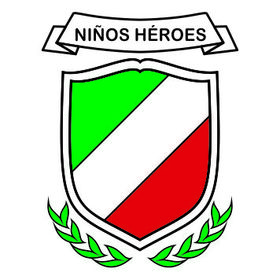

Formacion Academica
Informacion Personal
Formacion Academica
Situacion Laboral
Actividades Extraescolares
Configuracion
Guarderia : Niños Heroes

Kinder: Justo Cierra
Primaria: Constitucion Mexicana
Secundaria: Escuela Secundaria 74
Preparatoria: Unidad Academica Preparatoria Los Mochis
Universidad: Universidad Autonoma de Sinaloa